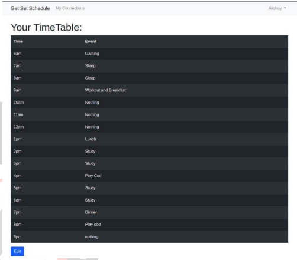
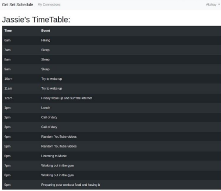

<!DOCTYPE html>
<html lang="en">

<head>
    <meta charset="UTF-8">
    <meta http-equiv="X-UA-Compatible" content="IE=edge">
    <meta name="viewport" content="width=device-width, initial-scale=1.0">
    <title>UCOE4</title>
</head>

<body>
    <h1 style="text-align: center;">Smart Time-Table Scheduler using Machine
        Learning</h1>
</h1>
<blockquote><h2 style="text-align: center;">Jaskirat Sood, Student, Universal College of Engineering, soodjaskirat2000@gmail.com
    Ankita Metrani, Student, Universal College of Engineering, metraniankita30@gmail.com
    Meet Bhanushali, Student, Universal College of Engineering, virambhadra@gmail.com
    Akshay Agarwal, Professor, Universal College of Engineering, akshay.agarwal@universal.edu.in
</h2></blockquote>
<h3 style="text-align: center;">Department of Computer Engineering, Universal College of Engineering,
    Vasai, Maharashtra, India</h3>
    <hr>
    <br>

    <b><big>Abstract: </big></b><q> An individual/student is involved in multiple tasks in daily life. Time management is considered to be the skills 
        that should be mastered by all the individuals at all levels and in all walks of life. Many People use manual way of 
        preparing timetables for each and every day which can be time consuming. They usually end up with not following the 
        timetable. Time-Table is not a new concept, there are many timetables creation and generation software for colleges that 
        are limited for only colleges and students. Also, with the help of advancement in technologies, using it to solve daily life 
        problems is a boon as well. To overcome all these problems, we propose the system that takes various inputs such as 
        profession, Hobbies and depending on these details we will form clusters and apply K-Nearest Neighbors Algorithm to 
        give suggestions based on these clusters formed. K-Nearest Neighbors Algorithm makes clusters of the people with same 
        profession and interests and when a new member joins similar schedule will be suggested. This Project also uses Market 
        Basket Algorithm for Suggesting changes made by people in same cluster. The time table formed can be modified by the 
        user at any moment making the utilization of all these resources in a way that will suit any type of person. Although we 
        expect that the users are required to give the correct details for the expected required suggestion.     
        </q><br><br>
        <p><b>Keywords</b> – Time-Table, KNN, Market Basket, Machine learning, Django
        </p>

        <ol>
            <dt><li><b><big>INTRODUCTIONS:</big></b></li></dt>
            <p>Goals being the most important thing in aspect of growth of 
                a person or a company, we thought of helping everyone 
                accomplish their goals. There are many ways of 
                accomplishing a goal. Breaking long term goal to short term 
                goal, keeping an average of work to be done in a particular 
                time, to keep daily goals. Whatever the method is, it’s not 
                effective without a proper schedule, most successful people 
                have fixed timings for all the activity to do each and every 
                work efficiently in this digital world, many such scheduling 
                plans were made and never followed due to the lack of 
                flexibility. </p>
                <p>Goals being the most important thing in aspect of growth of 
                    a person or a company, we thought of helping everyone 
                    accomplish their goals. There are many ways of 
                    accomplishing a goal. Breaking long term goal to short term 
                    goal, keeping an average of work to be done in a particular 
                    time, to keep daily goals. Whatever the method is, it’s not 
                    effective without a proper schedule, most successful people 
                    have fixed timings for all the activity to do each and every 
                    work efficiently in this digital world, many such scheduling 
                    plans were made and never followed due to the lack of 
                    flexibility. </p>
                    <p>Time-Table schedulers have been around for quite a long 
                        time. Reasons for the sudden renewed interest in Time-Table 
                        scheduler include massive advancement in artificial 
                        intelligence (AI) and Machine Learning (ML). Until now 
                        Time-table schedulers were mostly used to create time tables 
                        for schools or colleges. We plan to expand the usage of these 
                        Time-Table schedulers for Personal and professional usage 
                        as well. </p>
                        <p>The system tries to give accurate timetable schedule for a 
                            person with particular Profession and hobbies/interests using 
                            the data of the users it already has who have the same 
                            profession as well as same hobbies/interests. This is done by 
                            using machine learning which suggests the daily schedule 
                            based on the users with same qualities and interests to give 
                            the refined and optimum results. Our website will be built 
                            using artificial intelligence and machine learning that will 
                            analyze the user profession and hobbies. This system will 
                            have a web interface that will provide an optimal schedule to 
                            the user.</p>

                            <dt><li><b><big>LITERATURE SURVEY:</big></b></li></dt>
                            <p>[11] Timetable by Alexendra Liager presented the usage of 
                                android app to make timetable schedulers, the whole process 
                                is manual and user need to give input for each and every 
                                timeslot. [13] Timetable planner with alarm for study was 
                                presented by Damda to use an android app for week 
                                scheduling and comparison with other students, resulting in 
                                no free time selection and only useable at student level.[12] 
                                Automated College Time-Table Generator was made for 
                                generating automated time table at college level. It was 
                                strictly restricted for college premises. Also, [10] Web 
                                Application for Automatic Time Table Generation and [1] 
Electronic Lecture Time-Table Scheduler Using Genetic 
Algorithm was developed to overcome lecture time-tabling 
that was done manually, but still it has been restricted to 
school and college usage. The usage of KD-KNN-LR for 
marriage recommendation system as well as Music 
Personalized recommendation system using improved KNN 
Clustering algorithm helped us with an idea of using KNN 
Clustering algorithm for our project</p>

<dt><li><b><big>PROPOSED METHODOLOGY:</big></b></li></dt>
<p>The proposed method is creating a web-application which 
    can be used by anyone who values time. The web-application 
    has various modules which works simultaneously to give 
    user a time table schedule using machine learning. The 
    software and frameworks used are Python, Django web 
    framework, SQLite3 and web technologies. The System is 
    divided into 3 layers which are application layer which has 
    user and the Dashboard the basic details are then sent to 
    machine learning algorithm and database to be stored into the 
    dataset; this dataset will be used to make the algorithm 
    accurate.</p>
    
                                            <figcaption>Fig:Image Difference</figcaption><br><br>
    <p>According to system architecture as shown in Figure 1, The 
        user interacts with the Dashboard which internally is 
        connected with the Machine Learning module and the 
        database module for the output by the machine learning 
        module and user data from the Database module. The 
        machine learning module is connected to database module to 
        get the dataset to train the KNN model from the database. </p>

        <p>The modules are as follows</p>

        <b><big>Login/Signup module: </big></b>
        <p>The login signup module as the 
            name suggests is used to allow only legitimate users to access 
            their private space and edit time-table schedule. New users 
            can sign-up to use the web-app as shown in Figure 2</p>
            
                                            <figcaption>Fig:Login Page</figcaption><br><br>

                                            <b><big>Machine Learning module: </big></b>
                                            <p>We have used k-nearest 
                                                neighbor module to cluster the dataset based upon the 
                                                people’s professions and hobbies and then to cluster them 
                                                whenever a user joins, he will get the time table schedule 
                                                recommendation using the dataset we already have. The 
                                                KNN module is triggered every time a user log-in the app.</p>

                                                <b><big>Dashboard Module: </big></b>
                                                <p>All the user interaction takes 
                                                    place on dashboard where he can make new time-table, edit 
                                                    already existing timetable, make connections delete 
                                                    connections also can view his/her connections timetable 
                                                    schedule. The dashboard shows the user’s time-table 
                                                    schedule as shown is Figure 3 and the connection’s schedule 
                                                    us shown in Figure 4. </p>
                                                    
                                            <figcaption>Fig:Dashboard</figcaption><br><br>
                                            
                                            <figcaption>Fig:Dashboard</figcaption><br><br>
                                            


                                                    <b><big>Database Module: </big></b>
                                                    <p>This module is responsible for 
                                                        storing of all the user data as well as the time-table dataset 
                                                        once the user saved his or her schedule his/her time table will 
                                                        be added to the dataset to make our machine learning module 
                                                        accurate.</p>

                                                        <dt><li><b><big>RESULT ANALYSIS:</big></b></li></dt>
                                                        <p>We put our model to the test on variety of professions and 
                                                            hobbies and it performed admirably well. There was no exact 
                                                            existing system so we compared our outcomes with [1] 
Electronic Lecture Time-Table Scheduler Using Genetic 
Algorithm which uses genetic algorithm which is limited to 
lecture time-table schedule only. On the contrary, we used 
KNN algorithm and a clustering approach. Figure 5 shows 
the comparison between proposed system at topside and 
Electronic Lecture Time-Table Schedular Using Genetic 
Algorithm at downside.</p>

                                            <figcaption>Fig:Result of Proposed System vs Existing System</figcaption><br><br>
                                            <dt><li><b><big>CONCLUSION:</big></b></li></dt>
                                            <p>The overall system performance is well having few 
                                                anomalies due to small datasets. But the system is able to 
                                                accept the inputs of user, to be specific inputs as hobby and 
                                                profession. Also, it has been not only limited to the school 
                                                friends or college classes but to each and every working and 
                                                non-working professional. The dashboard is easy to access 
                                                by the users. The system is robust as it works effectively for 
                                                being used by individuals of various domains delivering a 
                                                good quality of services through a new possible way by 
                                                schedule recommendations of similar professions and 
                                                hobbies. It is user friendly and the system gives a quick and 
                                                expected response for clusters that are present. As for new 
                                                users' input, if the cluster was not present new cluster were 
                                                formed. The efficiency and accuracy of machine learning 
                                                algorithm will be increased by storing users’ input resulting 
                                                in new cluster formation and adding dataset for training the 
                                                machine learning module. </p>

<b><big>REFERENCES </big></b>
<p>[1] Jumoke Soyemi, John Akinode, Samson Oloruntoba “Electronic 
    Lecture Time-Table Scheduler Using Genetic Algorithm” 2017 
    IEEE 15th Intl Conference on Dependable, Autonomic and Secure 
    Computing. </p>
    <p>[2] V. Akshay, Anish Kumar S., R.M. Alagappan, S. Gnanavel 
        “BOOKAZOR - an Online Appointment Booking System” 
        Published in: 2019 International Conference on Vision Towards 
        Emerging Trends in Communication and Networking (ViTECoN)
        </p>
        <p>[3] Zhengxia Cai, Xue Zhang “Marriage Recommendation 
            Algorithm Based on KD-KNN-LR Model” Published in: 2020 
            IEEE International Conference on Artificial Intelligence and 
            Computer Applications (ICAICA)</p>
            <p>[4] Gang Li, Jingjing Zhang “Music personalized recommendation 
                system based on improved KNN algorithm” 2018 IEEE 3rd 
                Advanced Information Technology, Electronic and Automation 
                Control Conference (IAEAC)</p>
                <p>[5] Saritha M, Pranav Kiran Vaze, Pradeep, Mahesh N R 
                    “Automatic Time Table Generator” International Journal of 
                    Advanced Research in Computer Science and Software 
                    Engineering Volume 7, Issue 5, May 2017.P[6] P. Nandal, Ankit Satyawali, Dhananjay Sachdeva, Abhinav 
                    Singh Tomar “Graph Coloring based Scheduling Algorithm to 
                    automatically generate College Course Timetable” 2021 11th 
                    International Conference on Cloud Computing, Data Science & 
                    Engineering (Confluence)
                    </p>
                    <p>[7] Shweta Taneja, Charu Gupta, Kratika Goyal, Dharna Gureja 
                        “An Enhanced K-Nearest Neighbor Algorithm Using Information 
                        Gain and Clustering” 2014 Fourth International Conference on 
                        Advanced Computing & Communication Technologies</p>
                        <p>[8] Salwani Abdullah, Hamza Turabieh “Generating University 
                            Course Timetable Using Genetic Algorithms and Local Search” 
                            2008 Third International Conference on Convergence and Hybrid 
                            Information Technology
                            </p>
                            <p>[9] Vinod J, Kadam,, Samir S. Yadav “ACADEMIC TIMETABLE 
                                SCHEDULING : REVISITED” International Journal of Research 
                                In Science & Engineering</p>
                                <p>[10] Mugdha Kishor Patil, Rakhe Shruti Subodh, Prachi Ashok 
                                    Pawar and Naveena Narendrasingh Turkar “Web Application for 
                                    Automatic Time Table Generation” International Journal of Current 
                                    Engineering and Technology E-ISSN 2277 – 4106.
                                    </p>
                                    <p>[11] Timetable - Plan, Organize & Optimize your time 
                                        (https://play.google.com/store/apps/details?id=com.aligier.timetab
                                        le&hl=en_IN&gl=US )</p>
                                        <p>[12] Automated College Time –Table
                                            generator (https://nevonprojects.com/automated-college-timetablegenerator/)</p>
                                            <p>13] Timetable Planner With alarm for study 
                                                (https://play.google.com/store/apps/details?id=hbs.com.timetables
                                                creen&hl=en_IN&gl=US)</p>
</ol>
    
    <h4>more about topic</h4> <br>
    
    <details>
        <h3>
            <summary>Summary</summary>
        </h3><br>
        <p>summary of paper in our words</p>
    </details>
    <br>

    <style>
        figcaption{
            font-style: italic;
        }
        blockquote {
        font-size: 15px;
        font-weight: normal;
        font-style: italic;
        font-stretch: normal;
        line-height: 1.32;
        letter-spacing: -0.4px;
        color: #4FE2C1;
        padding: 0 0 0 20px;
        border-left: 2px solid #4FE2C1;
        margin: 0;
        position: relative;
    }
    </style>

</body>

</html>